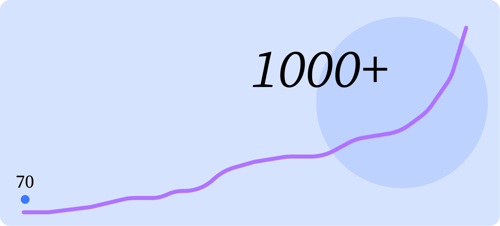
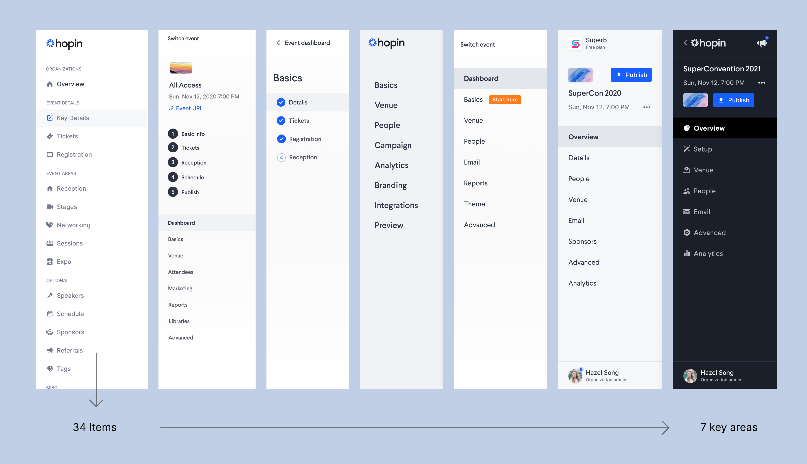
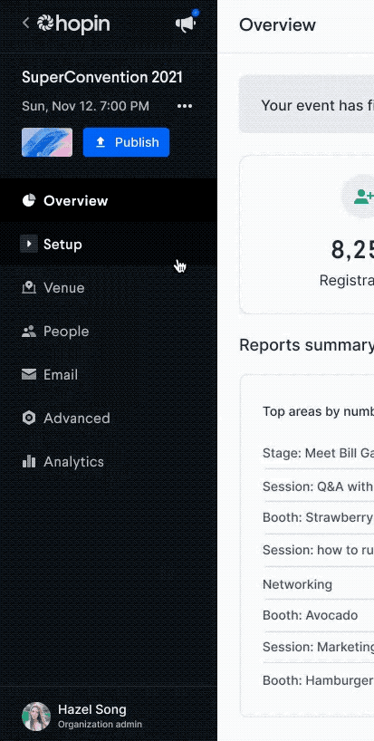
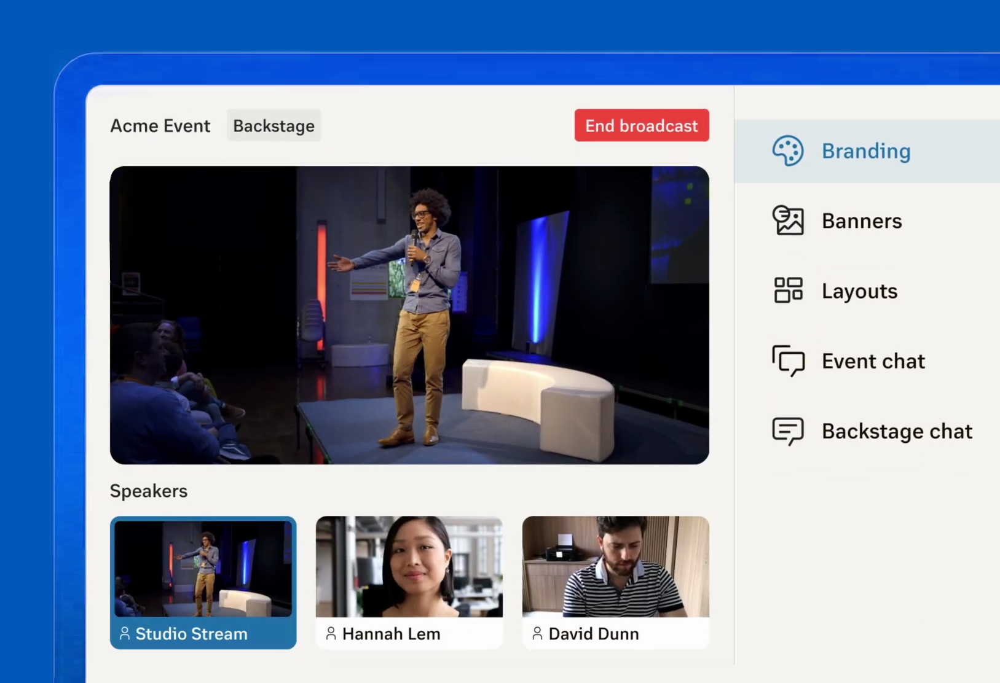
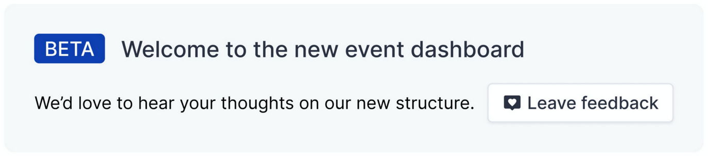
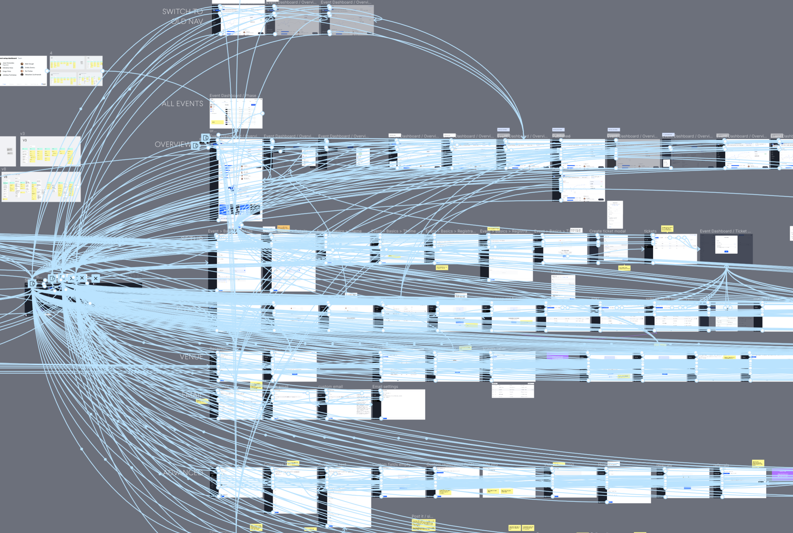
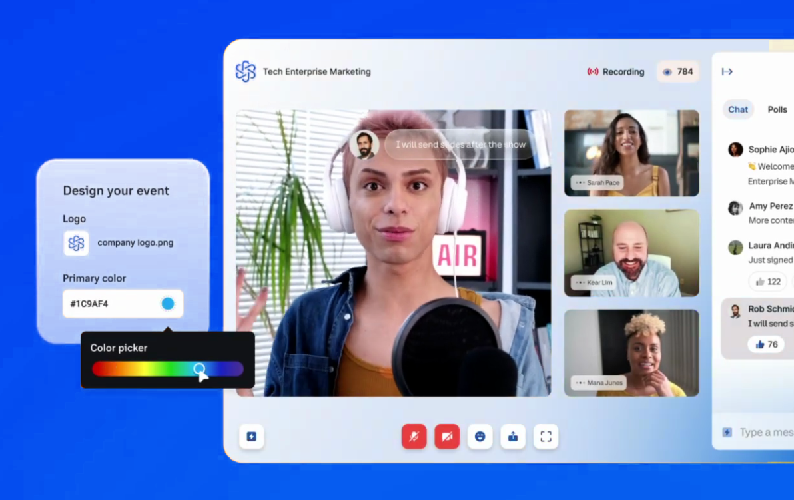
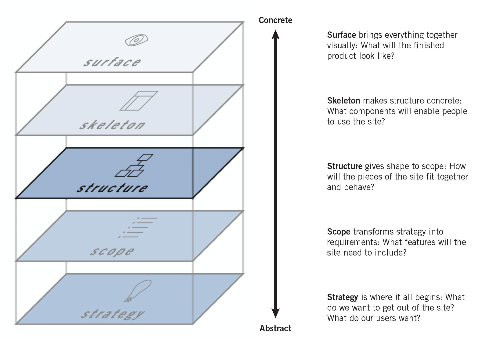
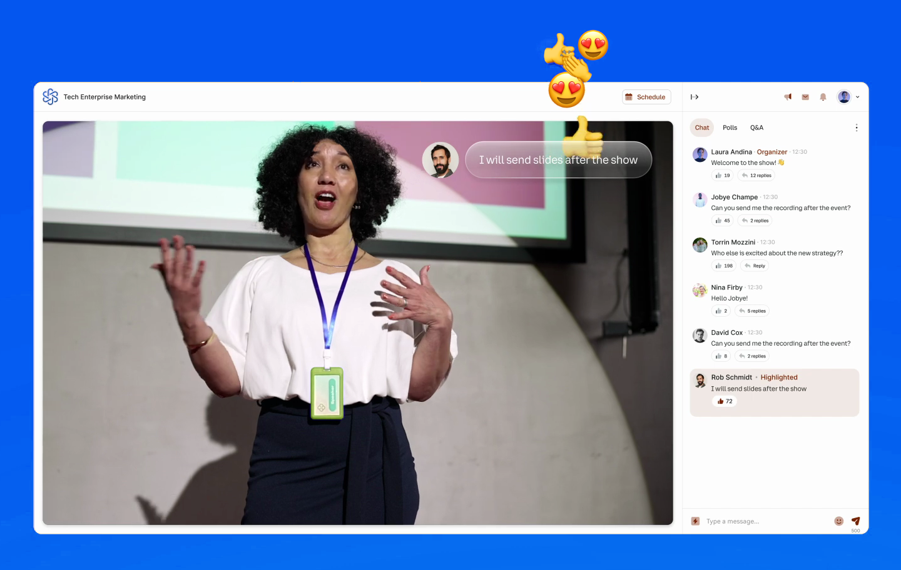

A crisis of complexity
Hopin’s event setup flow was under pressure. As the platform grew exponentially during the pandemic, user friction increased — and it showed in the numbers. Setup completion rates were lagging, setup times were increasing, and support tickets were piling up.
As Senior Product Designer, I led the end-to-end redesign of this critical flow. Our goal was clear: improve the user experience, reduce time-to-launch, and drive measurable impact on setup metrics — without compromising the flexibility of the platform.
From strategy to the surface
I have found Jesse James Garret’s “Elements of User Experience” a really helpful touchstone in my work, and I used it to frame our challenge with the team. We needed to take in all the levels of the experience to really improve things for our users.

Context: Operating at Scale in Hypergrowth
When I joined Hopin, the company had just 70 employees. Within 18 months, we’d scaled to over 1,000. The design team grew from 2 to 34.

Feature bloat and complexity
New features were launching rapidly, often without cohesive IA or consistency across flows. The event setup journey had become cluttered, confusing, and opaque — especially for new users. Yet this journey was one of the most important in the entire product. If a user couldn’t complete setup, they couldn’t run an event. It was the backbone of user activation — and needed urgent attention.

Defining Success
Working with a multi-disciplinary team including key product leaders, we defined our success criteria around three core metrics:
- Setup conversion rate: The percentage of users who started setup and reached completion.
- Setup completion time: Time taken from first action to publishing an event.
- Support tickets: Number of support requests raised during setup.
Early data from product analytics and Hotjar screen recordings revealed drop-off points and usability pain across the flow. Support ticket analysis showed recurring friction at specific stages. Our task was to redesign the flow based on real evidence — not assumptions.
Core Team
Impact
The redesign delivered measurable improvements across all target metrics:
- Event setup completion rate
Baseline: 55% → After redesign: 68% (+24%) - Setup time
Baseline: 18 minutes → After redesign: 14.5 minutes (-19%) - Support tickets
Baseline: 500/month → After redesign: 350/month (-30%) - Revenue impact
Baseline: $20M in 2020 sales → 2021 sales after redesign: $101M (+$81M)
Our Solution
Information Architecture Overhaul
We didn’t guess at the structure — we tested it. I led a series of card sorting exercises using Optimal Workshop, involving:
- Event organisers (both experienced and first-time users)
- Customer Support and Success teams
- Internal stakeholders across Product and Engineering
This helped us uncover users’ mental models and define a logical, intuitive information architecture. We prioritised task ordering based on both frequency and user expectations, ensuring the most important actions were surfaced first.
- Grouped related tasks into thematic sections
- Reordered high-value steps to appear early in the flow
- Moved niche features into expandable “Advanced Options” areas

Data-Informed Design Decisions
We complemented product analytics with Hotjar heatmaps and session recordings to identify interaction hotspots and usability blockers. These insights helped us fine-tune microinteractions, field placement, and visual hierarchy for better performance.
One key discovery: over 40% of users skipped the “Networking” section entirely — yet it sat mid-flow, disrupting momentum. We moved it to later in the journey, significantly reducing drop-offs and improving completion rates.
Enhancing Accessibility for Compliance and Growth
Using manual testing and real user reports from Fable, I worked with disabled testers to identify and remediate event accessibility barriers. This work ensured compliance with WCAG 2.1 AA and Section 508, reducing legal risk and making Hopin accessible to more customers.
These improvements unlocked adoption for 30,000+ new organisations, including government agencies, universities, and enterprises with strict accessibility requirements. This not only improved inclusivity but also expanded Hopin’s revenue opportunities.
Visual Redesign and UI Improvements
Reducing visual complexity through structured navigation
Alongside the structural IA overhaul, we delivered a full visual redesign of the event setup experience. Our goal was to make the interface feel lighter, cleaner, and easier to navigate — particularly for first-time organisers. A core part of this was the introduction of a new accordion-based navigation menu, designed to group related steps, lower cognitive load, and reduce visual clutter.
New accordion menu: hiding complexity, surfacing clarity
The old navigation menu presented all setup pages in a flat list, regardless of importance or usage frequency. This overwhelmed new users and made the flow feel unnecessarily long. In response, we designed a new grouped accordion menu structure. This allowed us to:
- Group related tasks under expandable headers
- Prioritise core steps while hiding advanced options by default
- Visually reinforce progress through logical grouping
- Create additional space in the layout for event title, contextual help, and notifications
Our initial tests of a flat vs. nested hierarchy showed a clear winner. One telling metric was the ‘completion rate’ of the tests – 48% completed the tests for ‘flat’, while 86% completed the ‘nested’ test – 79% better!

We then tested two interaction styles for usability – a ‘slider’ and an ‘accordion’. The accordion won, with a usability score 55.7% higher than the slider.

Improving page layout and field hierarchy
In tandem with the menu redesign, we also streamlined the page layout across setup screens. We reorganised page hierarchy to draw clearer attention to primary form fields, removed redundant UI elements, and created consistent spacing patterns to improve scannability. These layout adjustments significantly reduced visual noise and made the interface feel more focused and accessible.

Testing the visual redesign with users
We tested early prototypes of the new visual structure with event organisers, internal customer teams, and support agents. Feedback was overwhelmingly positive — users found the grouped menu structure easier to navigate, appreciated the ability to collapse rarely used sections, and felt more confident progressing through the flow. Importantly, participants commented on how much “lighter” and “less overwhelming” the interface felt, even though the underlying functionality remained the same.

New design principles for internal tools
Off the back of this work, I documented a set of visual design principles to guide future updates across all backend tools. These principles focused on clarity, hierarchy, modularity, and visual calm — helping maintain consistency as the platform grew. They were shared with other product teams to bring alignment across internal admin and event setup tools.
Testing & Iteration
- Weekly feedback sessions with internal teams and a core user focus group
- Multivariate testing of layout, navigation labels, and step sequencing
- Live dashboards tracking conversion, setup duration, and ticket volume
We used a lightweight, continuous delivery approach — releasing improvements in stages and observing impact in real time. A shared “snagging” doc and weekly triage with Engineering and PMs helped ensure quality across every detail.

Ongoing Development & Team Enablement
Created onboarding guides and walkthroughs for new designers
As our team scaled rapidly, I developed a structured onboarding toolkit for new designers joining the product team. This included walkthroughs of our event setup flow, rationale for key design decisions, Figma file conventions, design system components, and process documentation. These resources helped new joiners ramp up quickly, reducing onboarding time and improving consistency across deliverables.
Developed IA principles to ensure scalable, coherent structure
To prevent future design debt, I created a set of reusable IA principles that acted as a north star for ongoing product development. These principles focused on user mental models, logical task grouping, progressive disclosure, and naming conventions. I ran collaborative workshops with product managers and engineers to embed these principles into our shared planning language — ensuring we could scale without reintroducing complexity.

Ran cross-team design QA and feedback demos to maintain quality
I established regular QA and feedback loops that improved both team visibility and product quality. This included a shared “snagging” document for UX and visual issues, weekly triage meetings with product and engineering, and internal demo sessions where engineers showcased features in working code. These lightweight rituals enabled fast iteration, caught usability issues early, and ensured quality wasn’t compromised under delivery pressure.
Maintained a central metrics dashboard for long-term monitoring
To ensure our work had lasting impact, I helped create a live dashboard, tracking key metrics such as setup conversion rate, average time to publish, and support ticket volume. This gave the team ongoing visibility into performance and allowed us to identify trends, regression risks, and opportunities for further optimisation. It also helped stakeholders maintain focus on outcomes, not just features.

Lessons Learned
Early collaboration unlocks better outcomes than isolated design work
Our strongest ideas came not from isolated design work, but from early collaboration with engineering, product, and support. Working openly from rough sketches onwards helped us uncover constraints, align faster, and build a solution that worked across disciplines. It also fostered trust and buy-in — making implementation smoother and reducing last-minute rework.
IA strategy is one of the highest-leverage design activities
Spending time upfront on information architecture had the biggest impact on usability. By rethinking structure before screens, we delivered a flow that made more sense to users and scaled more cleanly as new features were added. This reinforced a key learning: IA work often delivers more value than UI polish, but it needs dedicated time and visibility.

Hotjar + analytics + qualitative feedback = a complete UX picture
Quantitative analytics tell you what’s happening, but not why. Combining product data with Hotjar session recordings, heatmaps, and live feedback from support gave us a well-rounded view of user behaviour. This triangulated approach gave us confidence in our decisions and enabled more precise iterations — balancing data insight with human understanding.
What I’d Do Differently
Instrument critical flows earlier to shorten the feedback loop
One of the biggest constraints early on was incomplete analytics. In hindsight, I’d push harder to implement instrumentation earlier — especially on key setup steps. Better baseline data would have accelerated diagnosis, prioritisation, and iteration. Instrumentation shouldn’t be an afterthought — it’s a design tool in its own right.
Secure stakeholder support sooner for structural IA work
Structural design work like IA often flies under the radar compared to visual UI updates. I’d invest more time upfront in helping stakeholders understand the business value of structure — using prototypes, analogies, and framing to communicate impact. Earlier buy-in would have enabled smoother delivery and deeper strategic alignment.

Invest more time upfront in sharing design intent and rationale internally
Strong design needs strong storytelling. I learned the value of clearly articulating design intent early and often — not just to design peers, but to product, engineering, and leadership. More deliberate communication of rationale helps build momentum, reduces misalignment, and encourages teams to think holistically rather than feature-by-feature.
Final Thoughts
This case study illustrates how UX design, when grounded in strategy, real data, and built through strong collaboration, can have a transformative impact on both user experience and business performance. At Hopin, we didn’t just ship a better interface — we rebuilt a critical journey for thousands of event organisers around the world. This enabled online conferences at an unprecedented scale, linking millions of users and enabling their personal and professional growth.
